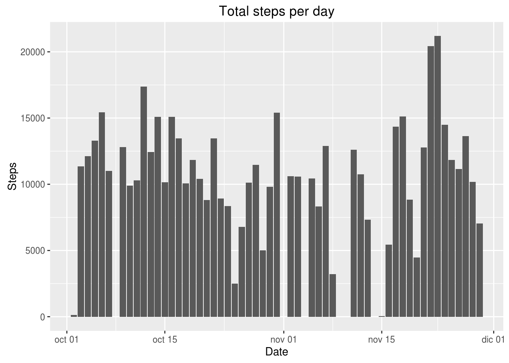
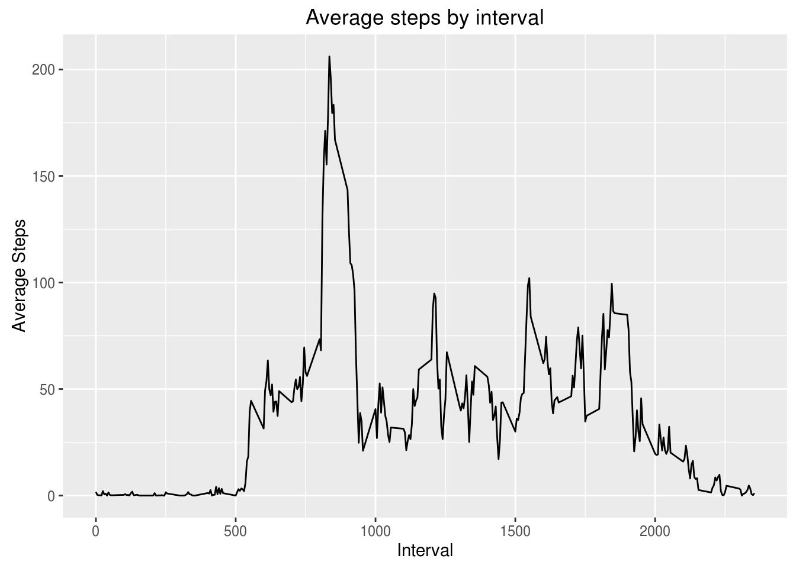
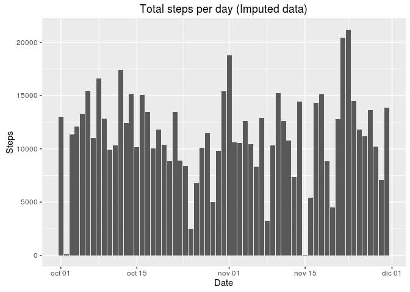
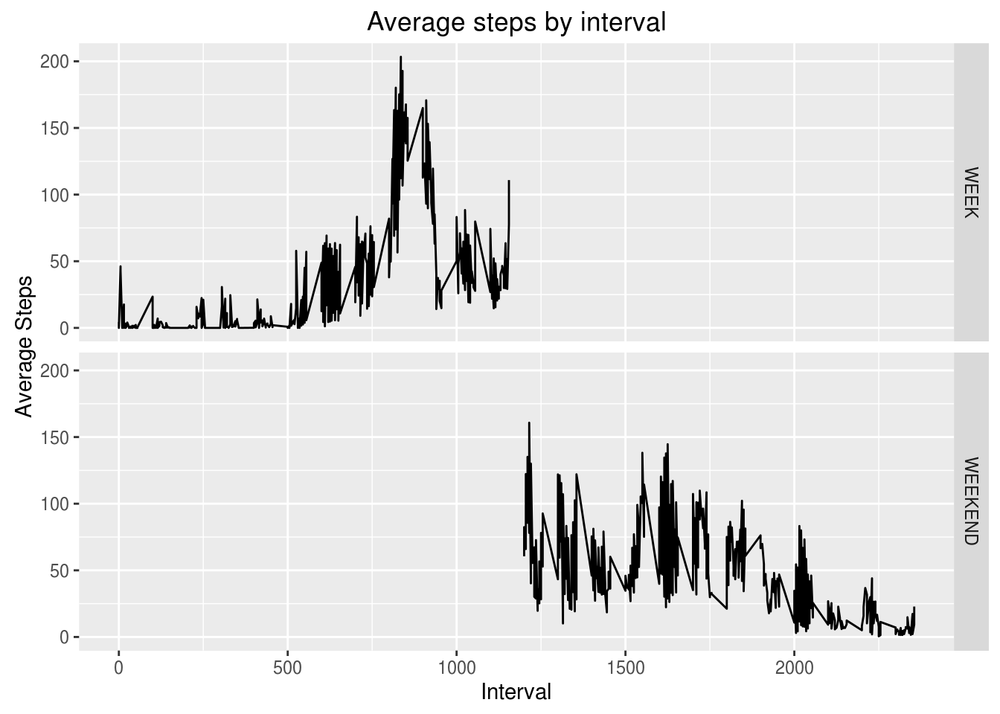

library(dplyr)##
## Attaching package: 'dplyr'
##
## The following objects are masked from 'package:stats':
##
## filter, lag
##
## The following objects are masked from 'package:base':
##
## intersect, setdiff, setequal, unionlibrary(ggplot2)
library(mice)## Loading required package: Rcpp
## mice 2.25 2015-11-09library(timeDate)#Read data and get dataset without missing data.
activity_raw <- read.csv("/home/unknown/r_workspace/activity.csv")
activity <- na.omit(activity_raw)#Calculating total steps per day, mean and median
activity_summary <- activity %>% group_by(date) %>% summarize(total_steps=sum(steps), mean_steps=mean(steps), median_steps=median(steps))
activity_summary <- transform(activity_summary, date=strptime(date, format = "%Y-%m-%d"))
print(activity_summary)## date total_steps mean_steps median_steps
## 1 2012-10-02 126 0.4375000 0
## 2 2012-10-03 11352 39.4166667 0
## 3 2012-10-04 12116 42.0694444 0
## 4 2012-10-05 13294 46.1597222 0
## 5 2012-10-06 15420 53.5416667 0
## 6 2012-10-07 11015 38.2465278 0
## 7 2012-10-09 12811 44.4826389 0
## 8 2012-10-10 9900 34.3750000 0
## 9 2012-10-11 10304 35.7777778 0
## 10 2012-10-12 17382 60.3541667 0
## 11 2012-10-13 12426 43.1458333 0
## 12 2012-10-14 15098 52.4236111 0
## 13 2012-10-15 10139 35.2048611 0
## 14 2012-10-16 15084 52.3750000 0
## 15 2012-10-17 13452 46.7083333 0
## 16 2012-10-18 10056 34.9166667 0
## 17 2012-10-19 11829 41.0729167 0
## 18 2012-10-20 10395 36.0937500 0
## 19 2012-10-21 8821 30.6284722 0
## 20 2012-10-22 13460 46.7361111 0
## 21 2012-10-23 8918 30.9652778 0
## 22 2012-10-24 8355 29.0104167 0
## 23 2012-10-25 2492 8.6527778 0
## 24 2012-10-26 6778 23.5347222 0
## 25 2012-10-27 10119 35.1354167 0
## 26 2012-10-28 11458 39.7847222 0
## 27 2012-10-29 5018 17.4236111 0
## 28 2012-10-30 9819 34.0937500 0
## 29 2012-10-31 15414 53.5208333 0
## 30 2012-11-02 10600 36.8055556 0
## 31 2012-11-03 10571 36.7048611 0
## 32 2012-11-05 10439 36.2465278 0
## 33 2012-11-06 8334 28.9375000 0
## 34 2012-11-07 12883 44.7326389 0
## 35 2012-11-08 3219 11.1770833 0
## 36 2012-11-11 12608 43.7777778 0
## 37 2012-11-12 10765 37.3784722 0
## 38 2012-11-13 7336 25.4722222 0
## 39 2012-11-15 41 0.1423611 0
## 40 2012-11-16 5441 18.8923611 0
## 41 2012-11-17 14339 49.7881944 0
## 42 2012-11-18 15110 52.4652778 0
## 43 2012-11-19 8841 30.6979167 0
## 44 2012-11-20 4472 15.5277778 0
## 45 2012-11-21 12787 44.3993056 0
## 46 2012-11-22 20427 70.9270833 0
## 47 2012-11-23 21194 73.5902778 0
## 48 2012-11-24 14478 50.2708333 0
## 49 2012-11-25 11834 41.0902778 0
## 50 2012-11-26 11162 38.7569444 0
## 51 2012-11-27 13646 47.3819444 0
## 52 2012-11-28 10183 35.3576389 0
## 53 2012-11-29 7047 24.4687500 0#Plot total steps. Since we already have calculated the total we can use a bar plot.
ggplot(data=activity_summary, aes(activity_summary$date, activity_summary$total_steps)) + geom_bar(stat="identity") + ggtitle("Total steps per day") + ylab("Steps") + xlab("Date")
#Create time series
interval_average <- activity %>% group_by(interval) %>% summarize(average_steps=mean(steps))
ggplot(interval_average, aes(interval_average$interval, interval_average$average_steps)) + geom_line() + xlab("Interval") + ylab("Average Steps") + ggtitle("Average steps by interval")
#Get the interval with the higher steps average
max_average_row <- which.max(interval_average$average_steps)
max_average_interval <- interval_average[[max_average_row,1]]
print(paste("The interval with the higher steps average is ", max_average_interval))## [1] "The interval with the higher steps average is 835"#Calculate the number of missing values.
md.pattern(activity_raw)## date interval steps
## 15264 1 1 1 0
## 2304 1 1 0 1
## 0 0 2304 2304imputedValues <- mice(activity_raw, method = "pmm", seed = 500)##
## iter imp variable
## 1 1 steps
## 1 2 steps
## 1 3 steps
## 1 4 steps
## 1 5 steps
## 2 1 steps
## 2 2 steps
## 2 3 steps
## 2 4 steps
## 2 5 steps
## 3 1 steps
## 3 2 steps
## 3 3 steps
## 3 4 steps
## 3 5 steps
## 4 1 steps
## 4 2 steps
## 4 3 steps
## 4 4 steps
## 4 5 steps
## 5 1 steps
## 5 2 steps
## 5 3 steps
## 5 4 steps
## 5 5 stepsactivity_imputed <- complete(imputedValues, 1)
#Calculating total steps per day, mean and median for activity with imputed data
activity_imputed_summary <- activity_imputed %>% group_by(date) %>% summarize(total_steps=sum(steps), mean_steps=mean(steps), median_steps=median(steps))
#Transform data
activity_imputed_summary <- transform(activity_imputed_summary, date=strptime(date, format = "%Y-%m-%d"))
#Create graphic
ggplot(data=activity_imputed_summary, aes(activity_imputed_summary$date, activity_imputed_summary$total_steps)) + geom_bar(stat="identity") + ggtitle("Total steps per day (Imputed data)") + ylab("Steps") + xlab("Date")
#Transform data to create time series
activity_imputed_date <- transform(activity_imputed, date=as.POSIXct(strptime(date, format = "%Y-%m-%d")))
activity_imputed_clasif <- mutate(activity_imputed_date, type=ifelse(isWeekday(activity_imputed_date$date, wday=1:5), "WEEK", "WEEKEND"))
interval_average_clas <- activity_imputed_clasif %>% group_by(interval, type) %>% summarize(average_steps=mean(steps))
ggplot(interval_average_clas, aes(interval_average_clas$interval, interval_average_clas$average_steps)) + geom_line() + xlab("Interval") + ylab("Average Steps") + ggtitle("Average steps by interval") + facet_grid(type ~ .)